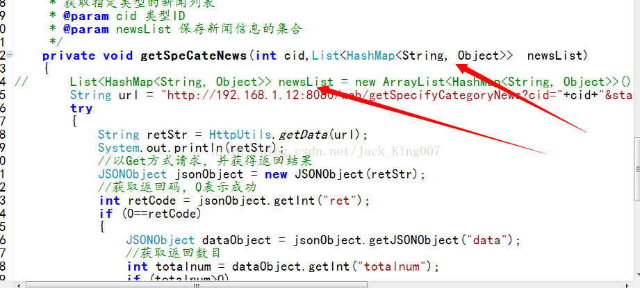
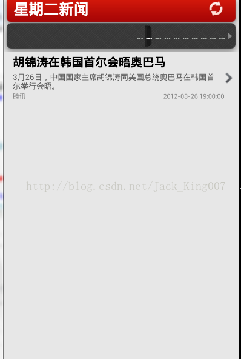

对于要点击条目获取不同内容并让 listview更新的话，首先要获取到ID号。
首先让list集合变成全局的，不用在new出现来，不然会导致不同空间不同数据，这也是我前代码一个bug
List<HashMap<String, Object>> newsData = getSpeCateNews(mCid);
private List<HashMap<String, Object>> mNewsData;
然后在gridview里面 获取ID号， 因为所有信息的传入 adapter 的时候被放入了一个集合中 categories
所以通过他可以获得ID
//1.先获取一个集合categories
//2.获取低级的条目categories.get(position)
//3.获取hashmap集合typecategories.get(position).get("category_title")
//type里面有点击的ID
mCid = categories.get(position).get("category_title").getCid();
其实这样修改并不会刷新数据，因为在前面所说 因为所对应的空间不多 数据都不同，所以刷新数据不成功最主要的是这一句话
List<HashMap<String, Object>> newsList = new ArrayList<HashMap<String, Object>>();
每一次都new出了一个新的list 空间也不同 所以代码要修改下 让所有新闻内容指向一个储存空间

公用一个list集合

记住清空list集合
end
